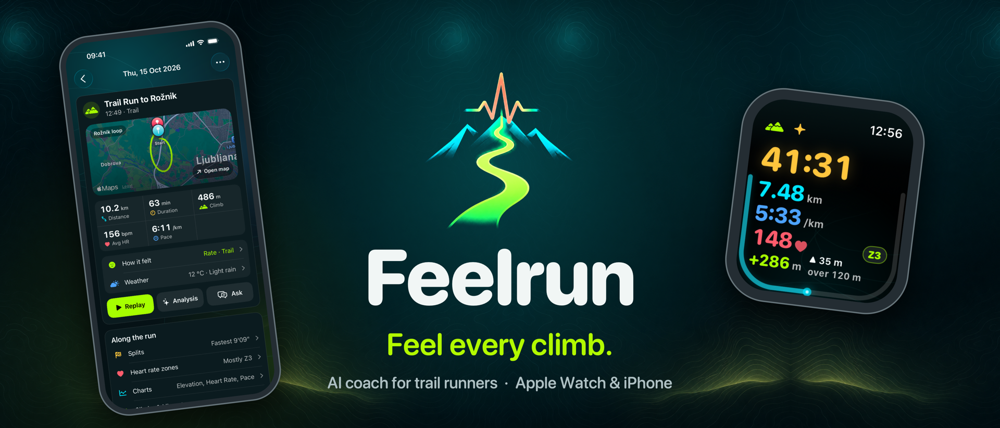

Feel every climb.
Feelrun is a running coach for Apple Watch and iPhone, made for trails and hills.
Integrates with Apple Health: it reads your workout history and saves the runs you record.

Free
- Record runs, hikes and walks on Apple Watch or iPhone, saved to Apple Health
- Time, distance, pace, heart rate, zone and climb at a glance on the watch
- Spoken cues during the run, with alerts at the heart-rate, distance and time limits you set
- Off-route alert, and a sunset warning that reckons the way back from where you are
- Every run in detail: map, splits, heart-rate zones, charts, weather and how it felt
Feelrun Pro
Try it free for 30 days, then one purchase. No subscription.
- AI coach: cues written for you during the run, an analysis of every run, and a chat about your training
- A training plan to your goal race, week by week, around your week and the weather forecast
- Route and climb comparisons with your earlier runs
- Replay any run on the map, and save it as a video
- Live sharing: someone at home follows your run on a map, live
The AI coach uses your own OpenAI or Anthropic API key. No account, no Feelrun server, no tracking.